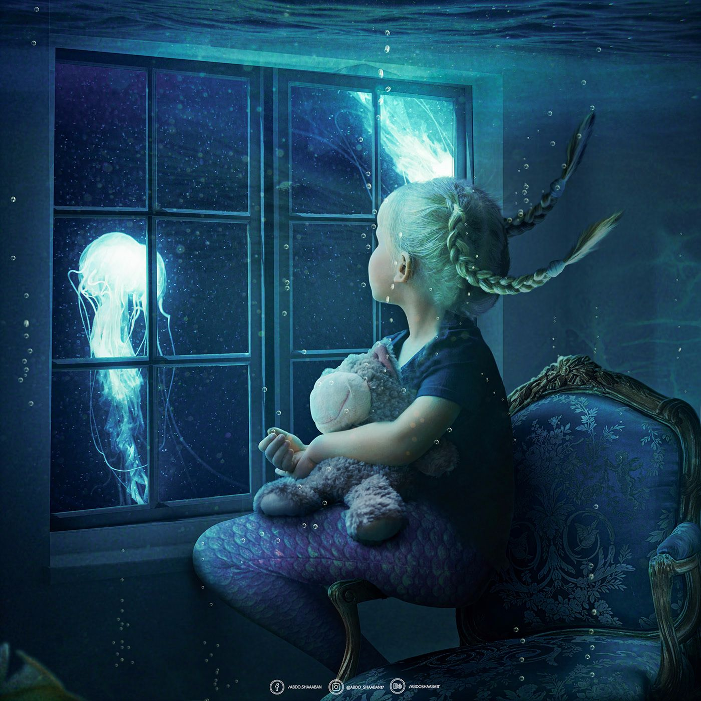
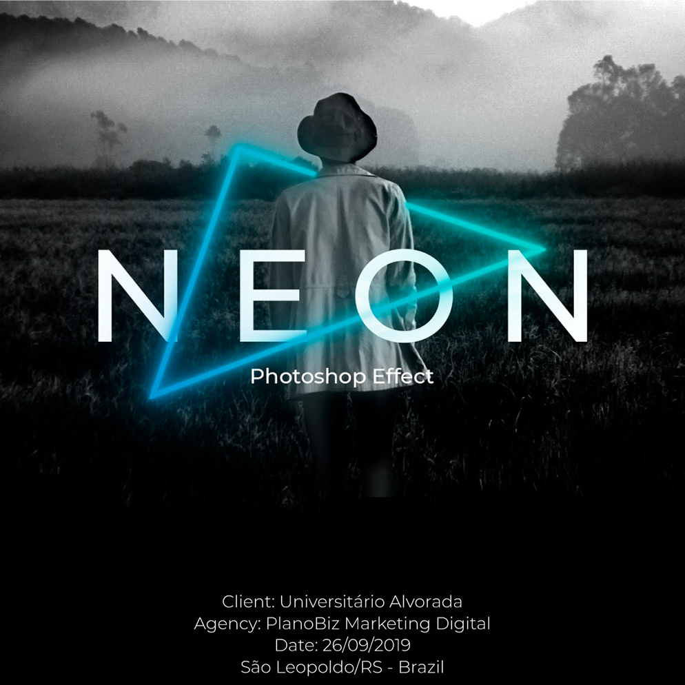
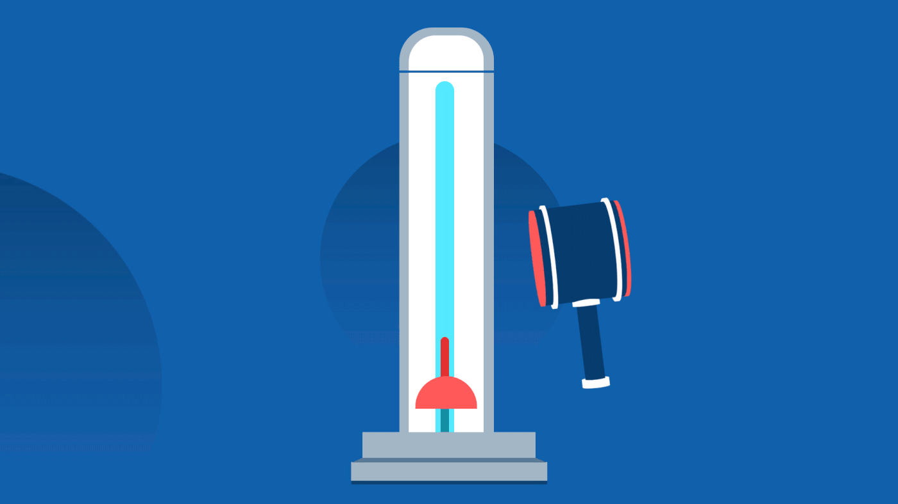
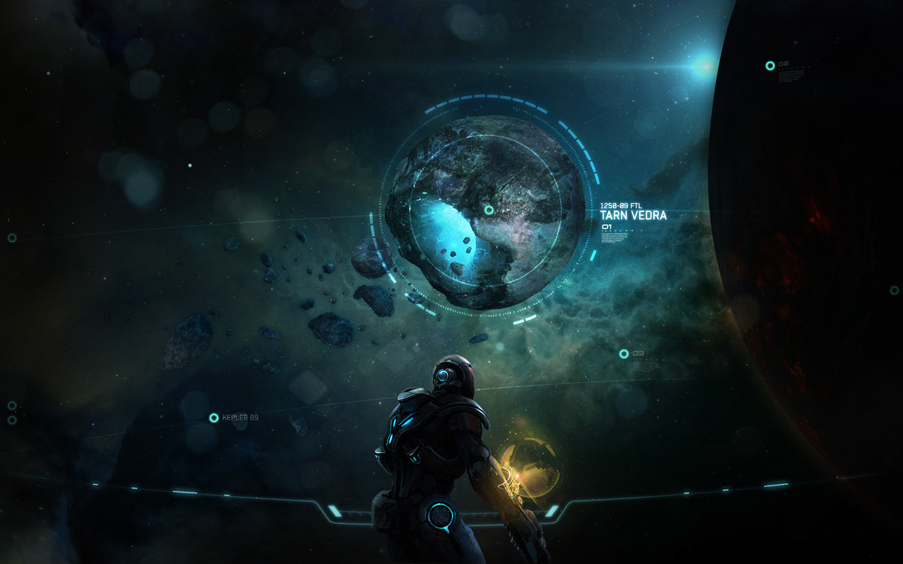
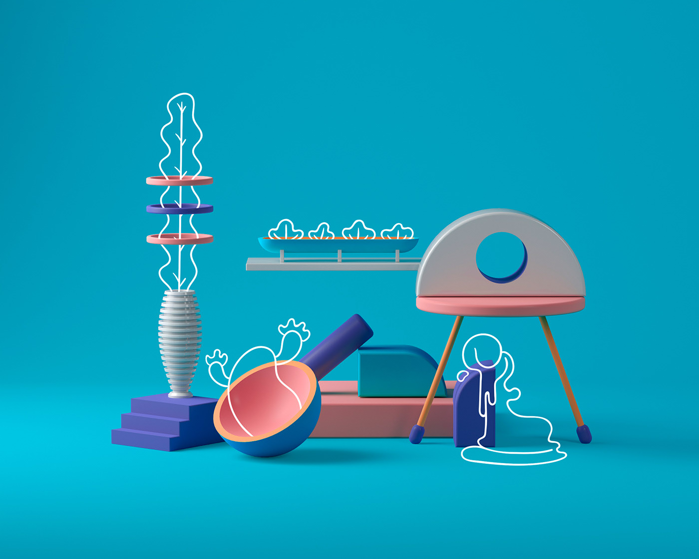
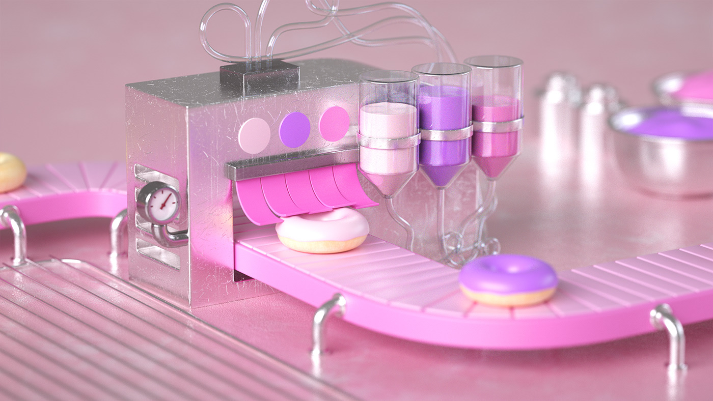
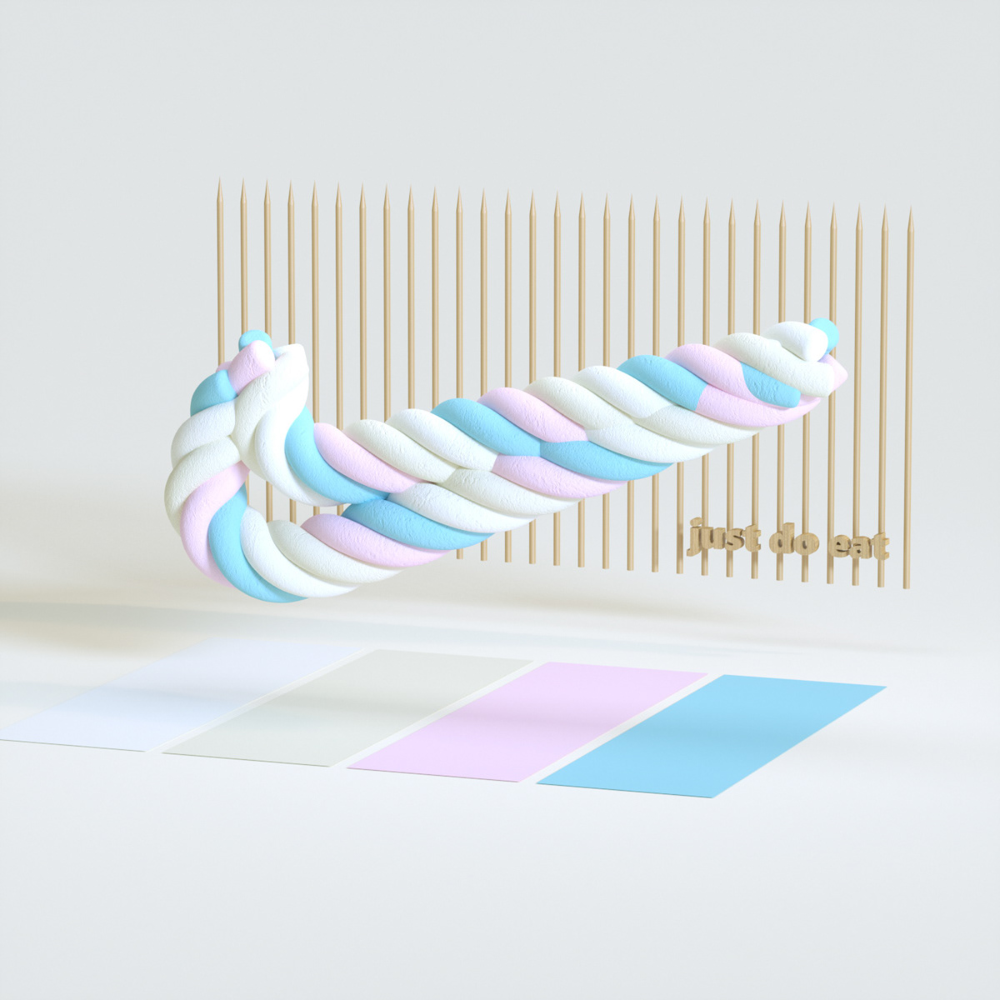
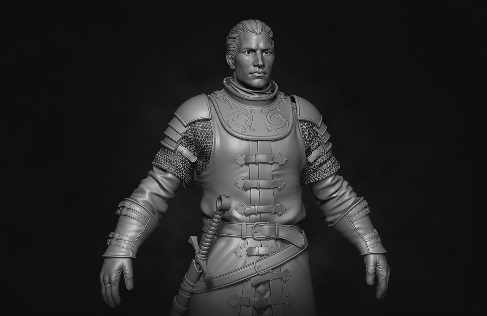
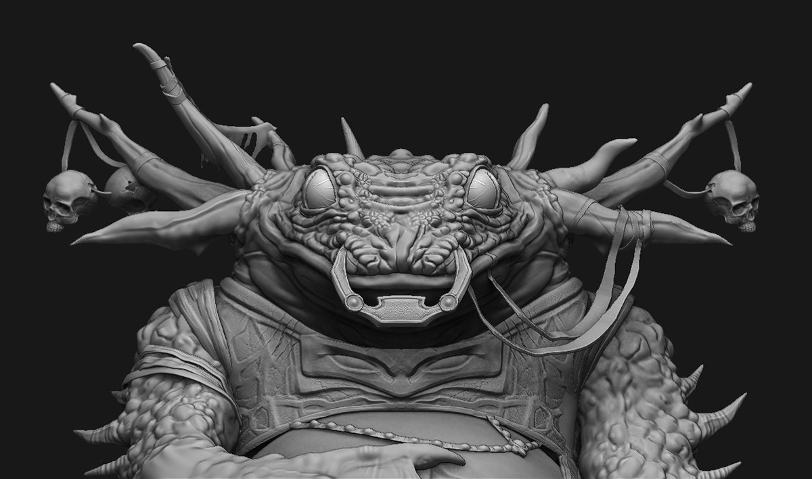
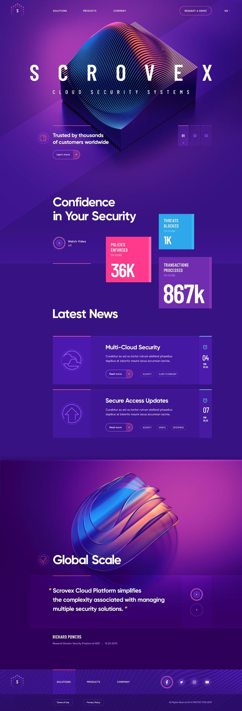

PS的海报制作、如何P图让你的照片看起来高大上
PR的踩点剪辑，剪出一条好的片子，当你拿去发朋友圈时，可以让你变得更加有逼格，收获更多的赞。
使用AE来创作MG动画，又或者是特效。当你学会使用AE做特效，那就很牛逼了。在AE中制作出的特效那是令人赏心悦目的。
使用建模软件可以建立出逼真的模型，比如：人物，汽车，飞船，又或者是广告。搭配其他影视特效软件（Nuke），你可以做出以假乱真的效果。
设计一个好看的界面，能让浏览者心情愉悦，合理的布局让看的人更加容易上手
